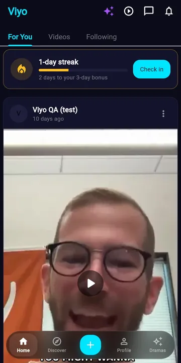
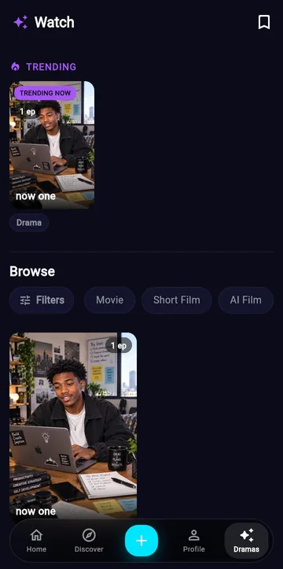

In active development
An AI-powered video entertainment and creator platform combining short-form video, drama discovery and AI-assisted content creation.


What it does
- Video feed & creator content — For You, Videos and Following tabs, creator posts, likes, comments, sharing and messaging.
- Drama & film discovery — trending dramas, episode-based series and browse filters for movies, short films and AI films.
- AI-assisted drama & film creation — VIYO Studio takes an idea through script, scene breakdown, casting, voices, scene images and video assembly.
- AI video repurposing — upload one longer video and get short, phone-cropped clips with captions, processed by a background worker.
- Hook checking — AI feedback on a caption's opening line before posting.
- Creator uploads & publishing — photo, video and text posts, plus drama, series, movie and film uploads.
Technology
Engineering highlights
- Cross-platform Flutter client with a separate Python/FastAPI backend
- Background workers with job claiming, heartbeats and retries
- Server-side credit estimates, holds and refunds for paid AI steps
- Ownership-checked creator downloads via signed links
Development status. VIYO is under active development. Live AI generation and payment flows are implemented in the codebase but are not presented here as production-ready: the Studio tests use simulated AI providers, and live provider, payment and deployment testing still has to be verified separately.